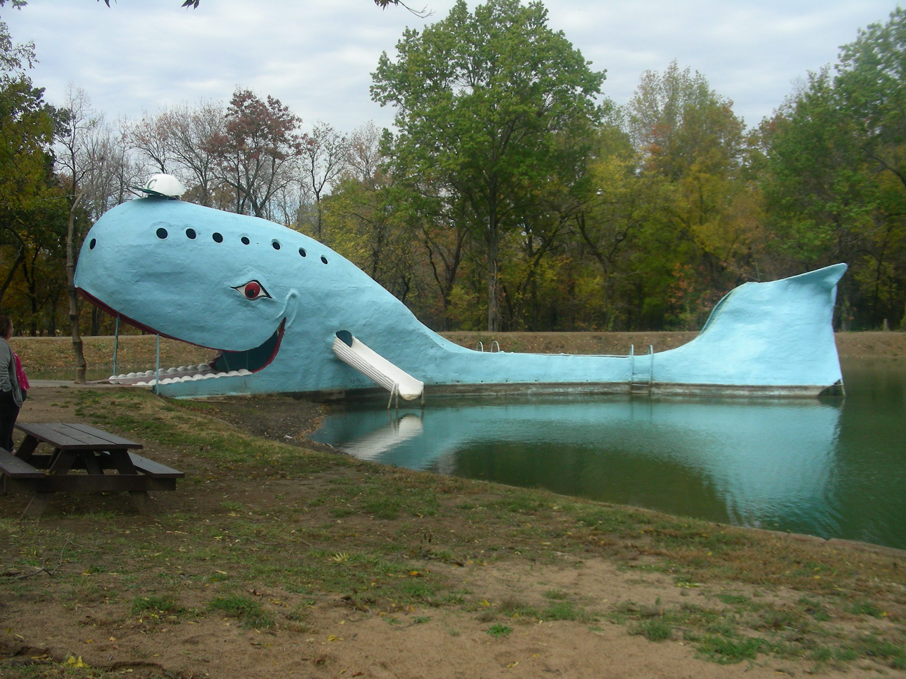

TakeAways
It was a Great Trip! GREAT TRIP! GREAT ADVENTURE! HIGHLY RECOMMENDED! but;
1. It takes a lot of time to cover that much ground. We never would have been able to do the entire thing while working and raising a family. Most people we met, were doing the Route66 Adventure in segments, which makes a lot of sense. We even did the first two legs of the trip, Chicago to Joliet and then Joliet to Pontiac on two separate Saturdays, to make the trip easier.
2. We have some of the expenses of going on an adventure like this, here. This was only for the two of us, so for a bigger family expenses could increase. (Snacks, snacks and more STUFF for the kids; you know.) Keep these things in mind.
3. Driving the Route 66 Adventure is slow going. I strongly recommend having a bunch of navigational tools handy(Maps, Garmin, Apps, Etc). We used this book and this Navigational App. They worked for us (excellently), but there’s probably better tools available, (certainly as time goes on). The app we used showed us EXACTLY, where to go at all times; so at times we were really questioning where we we were going. Take my word for it; the App is accurate. It was showing us all the true routes of Route66. You really have to trust it; but, like I said, at times, it can be real slow going. And sometimes the App will actually have you backtracking, due to closed roads, dead ends, old bridges, etc. But, by using this App you can really see all of Route66.
4. We drove Route 66 from Chicago to Los Angeles to experience a cruise(Outlaw Country Cruise). We had a great time. We’re actually thinking ‘bout going on another Outlaw Country Cruise out of Florida. Maybe we’ll explore Route41 on the way. Maybe.
So Long!
Tools For The Trip
2022 Gas and Lodging Expenses(Cruise Not Included)